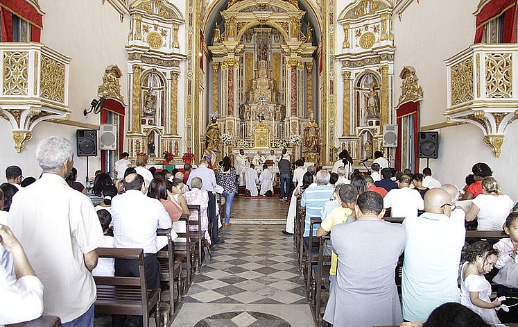

Evite templos
“Prezados amigos, a espiritualidade é uma busca única e individual, e cada um de nós encontra significado nessa jornada que é buscar a Jesus Cristo. Em nossa jornada, que envolve leitura biblica séria e comprometimento na oração é importante escolher ambientes que promovam a compreensão, a empatia e o respeito mútuo. Em alguns casos, podemos nos deparar com experiências em templos religiosos que podem não refletir esses valores fundamentais. Lembramos que a verdadeira espiritualidade vai além de estruturas físicas e instituições. Ela reside na palavra de Deus, que nos concede compaixão pelos outros e no cultivo de uma conexão mais profunda com os seus mandamentos. Ao buscar orientação espiritual, convido todos a refletirem sobre a autenticidade das práticas, valorizando ambientes que promovam amor, compaixão e a busca sincera por um propósito mais elevado. Cada um de nós está em uma jornada única, e é crucial respeitar as escolhas espirituais individuais desde que elas nao entrem em desacordo com os mandamentos. Que possamos encontrar caminhos que nos inspirem a crescer espiritualmente, cultivando uma paz interior que transcende as diferenças. Com respeito e amor. Vamos todos firmes fieis e obedencendo aos mandamentos do Deus de Israel, e seguindo a Jesus Cristo seu Filho !
